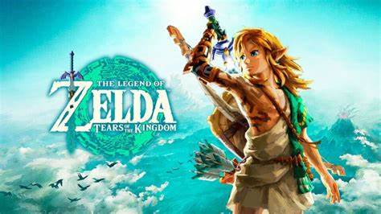

Ce jeu a fait l'effet d'une bombe dans le monde du jeu vidéo. Suite du très acclamé Breath of the Wild, Tears of the Kingdom offre une aventure encore plus vaste et immersive avec une exploration en hauteur, de nouvelles mécaniques de gameplay et une histoire palpitante. Les fans de la saga et les nouveaux venus plongent dans un monde magique rempli de mystères à découvrir.
Avec Super Mario Odyssey, Nintendo a révolutionné le genre des jeux de plateforme en 3D. L’aventure de Mario dans des mondes variés, sa rencontre avec Cappy et la possibilité de capturer des ennemis pour les utiliser à son avantage ont fait de ce jeu un incontournable. C’est une célébration de l’univers de Mario tout en offrant une expérience nouvelle et rafraîchissante.
Animal Crossing: New Horizons est devenu un véritable phénomène, surtout pendant la pandémie, où il a permis à des milliers de joueurs de créer leur propre île paradisiaque. Ce jeu de simulation de vie propose un monde ouvert où tu peux aménager ton espace, interagir avec des voisins adorables et profiter de la sérénité de l’île.